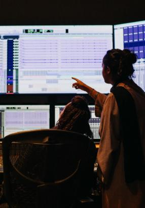
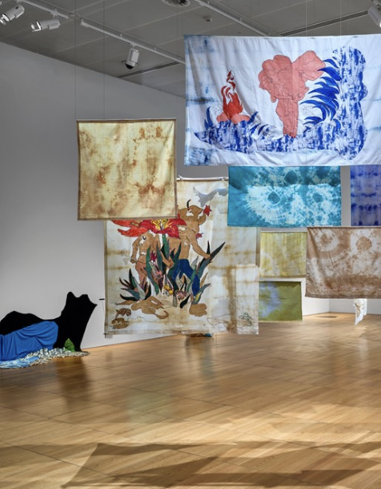
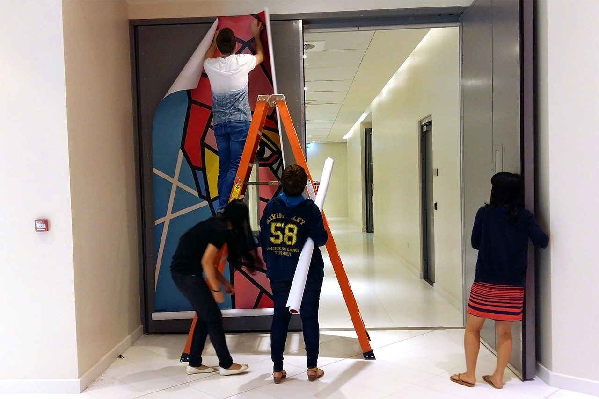
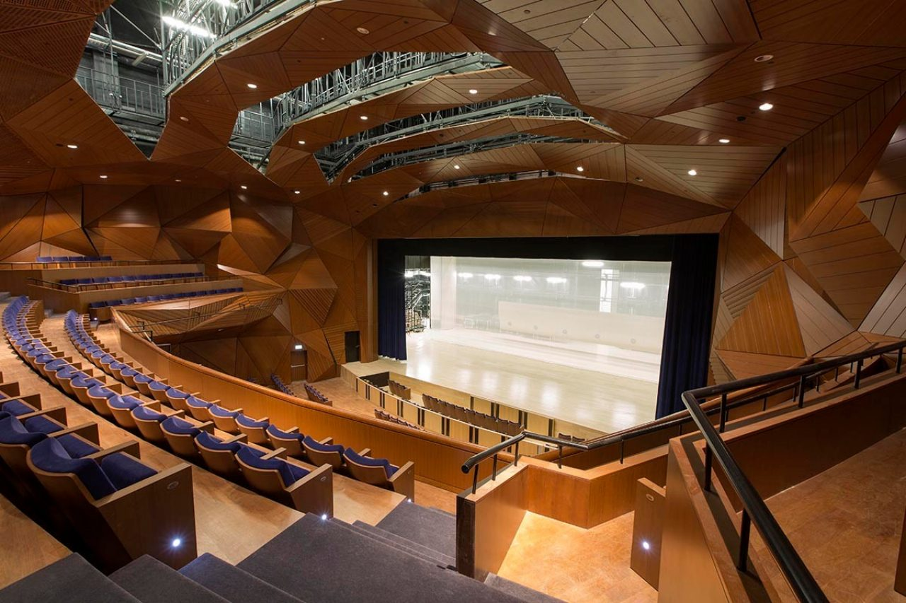
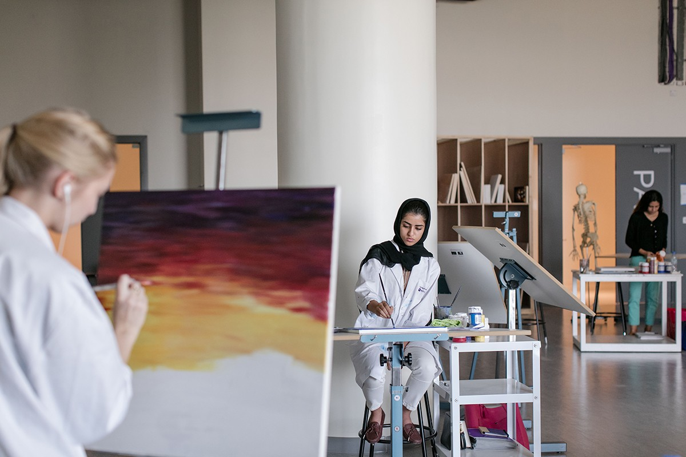

1. When was The Arts Center at NYU Abu Dhabi founded?
Creative Spaces
Discover our world-class facilities

Record, mix, and master with industry-grade equipment and expert support.
Music Production Studio

Rotating exhibitions spotlight regional voices next to global innovators.
Art Gallery

Flexible labs invite experimentation across media, tech, and fabrication.
Lab Spaces

An immersive venue engineered for bold concerts, dance, and theater.
Performance Hall

Collaborative studio tables keep prototypes and sketches flowing.
Design Studio

Our signature red room hosts boundary-pushing performances nightly.
Red Theater